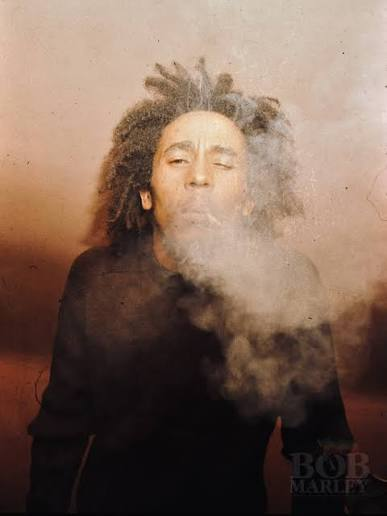

Robert Nesta "Bob" Marley[1] OM (Nine Mile, 6 de fevereiro de 1945 – Miami, 11 de maio de 1981) foi um cantor, compositor, multi-instrumentista jamaicano e o mais conhecido músico de reggae de todos os tempos, famoso por popularizar internacionalmente o gênero. Já vendeu mais de 75 milhões de discos e, em 1978, três anos antes de sua morte, foi condecorado pela ONU com a "Medalha da Paz do Terceiro Mundo". Sua obra tratava principalmente de temas político-sociais e espirituais. Dedicado a protestar contra injustiças sociais, Bob Marley é mundialmente celebrado como a voz dos pobres e oprimidos, sendo considerado um símbolo de resistência negra, espiritualidade, defesa dos direitos humanos e luta por justiça social. Suas músicas denunciavam o racismo, a desigualdade social, o colonialismo e a guerra. Devoto do movimento religioso rastafári, a vida e a obra de Bob Marley foram profundamente influenciadas por sua fé. Sua música serviu de porta-voz às convicções e temas da fé rastafári, como as interpretações afrocêntricas da Bíblia e o pan-africanismo. A África e suas questões, como a miséria e a colonização europeia, foram também assuntos amplamente abordados em suas músicas.